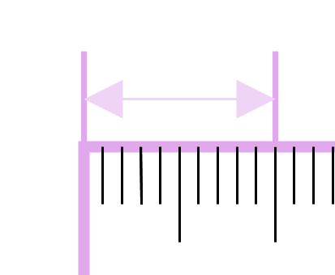

여러 가지 단위로 길이 재기
길이를 잴 때 사용할 수 있는 단위에는 칫솔, 볼펜 등 여러가지가 있습니다.1cm 알아보기

1cm는 1센티미터라고 읽습니다.
자로 길이 재기
<방법 1>- 물건의 한쪽 끝을 자의 눈금 0에 맞춥니다.
- 물건의 다른 끝에 있는 자의 눈금을 읽습니다.
- 물건의 한쪽 끝을 자의 눈금 하나에 맞춥니다.
- 그 눈금에서 다른 끝의 눈금까지 1cm가 몇번 들어가는지 셉니다.
약 몇cm인지 알아보기
길이가 자의 눈금 사이에 있을때에는 눈금과 가까운 쪽에 있는 숫자를 읽으면서 숫자 앞에 '약'을 붙여서 말합니다.길이 어림하기
자를 사용하지 않고 길이를 어림할 때에는 1cm가 몇번 있는지를 생각하면서 어림합니다.어림한 길이를 말할 때에는 숫자 앞에 '약'을 붙여서 말합니다.